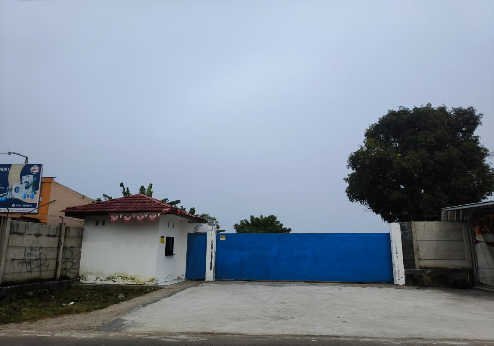
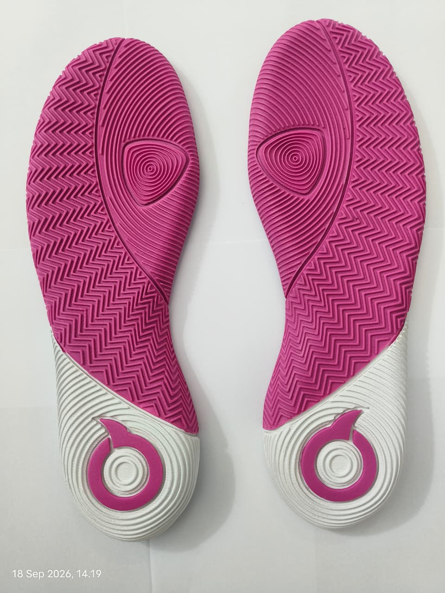
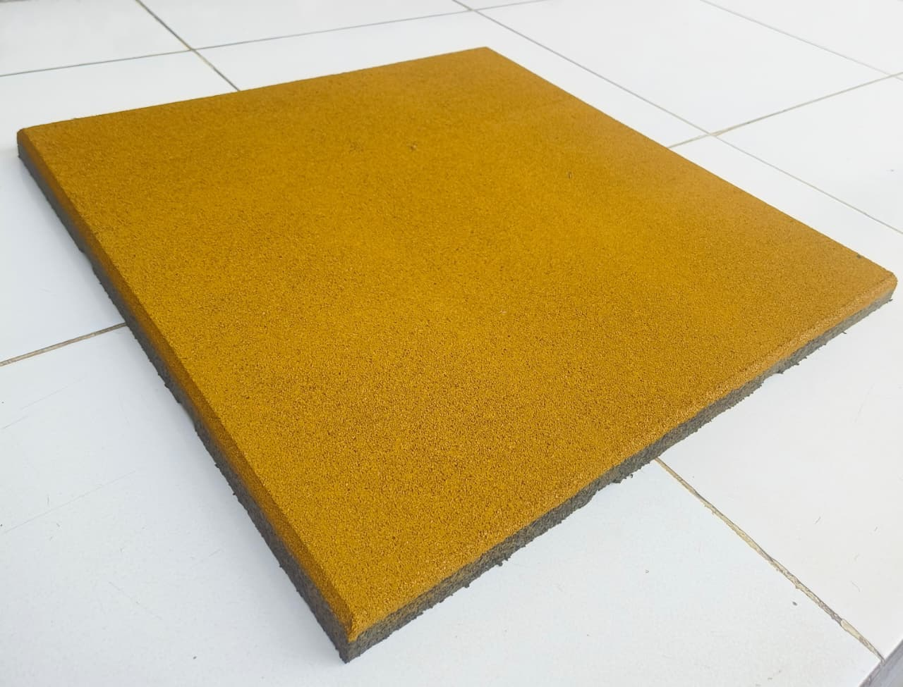
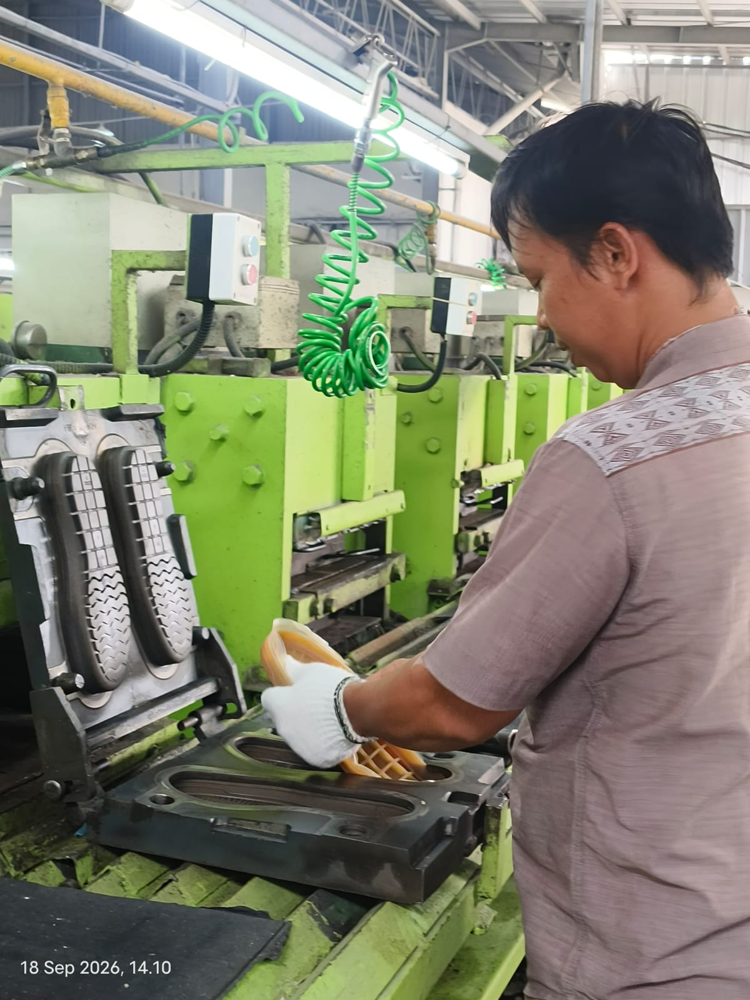
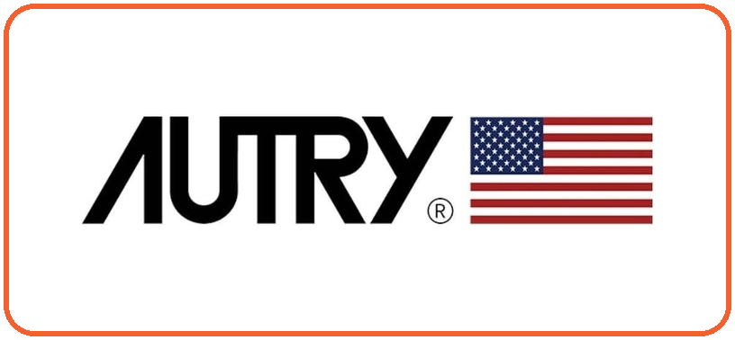
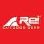
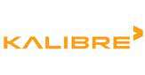

Manufaktur alas kaki · Tangerang, Indonesia
Fondasi untuk
langkah besar.
Outsole premium, foxing, dan matras yang dirancang untuk meningkatkan kualitas serta nilai produk Anda.
2022Berdiri sejak
15+Brand mempercayai kami
3Lini produk
01 Tentang SOL
PT Semesta
Olah Lestari

Berdiri sejak November 2022, PT Semesta Olah Lestari (SOL) merupakan perusahaan manufaktur pada industri alas kaki untuk keperluan sehari-sehari yang berbasis di Kabupaten Tangerang. Kami memproduksi outsole kualitas premium dengan harga yang kompetitif menggunakan mesin berteknologi canggih dan ramah lingkungan.
PT Semesta Olah Lestari (SOL) hadir untuk menjawab kebutuhan brand sepatu lokal maupun internasional terhadap outsole berkualitas dengan material pilihan dan menyesuaikan dengan keinginan klien demi menambah value dan nilai jual produknya.
Kami berusaha untuk terus memenuhi kebutuhan brand lokal dalam berkarya dan memajukan industri sepatu dalam negeri agar dapat dicintai hingga ke pelosok negeri, karena memakai sepatu berkualitas dan nyaman merupakan hak bagi setiap insan. Di samping itu, kami juga memperluas lini bisnis dengan memproduksi foxing sepatu dan matras untuk keperluan olahraga.
Kenali cara kami bekerja →- Meningkatkan dan mengembangkan kualitas outsole yang diproduksi
- Memberikan material pilihan terbaik demi menjaga kualitas produk klien
- Memastikan produk yang dihasilkan berkualitas dan sesuai ekspektasi klien
- Selalu berinovasi menciptakan outsole berkelas dunia
02 Kata Founder
“PT Semesta Olah Lestari (SOL) hadir untuk men-support brand lokal maupun internasional untuk berkolaborasi menciptakan sepatu berkualitas premium dan dapat bersaing di kelas dunia.”
Tren fashion yang semakin berkembang diikuti dengan munculnya berbagai brand sepatu baru di Indonesia membuat pilihan semakin beragam. Namun, hal tersebut tidak diikuti dengan kualitas sepatu yang mumpuni, sehingga brand lokal masih sering dianggap sebelah mata. Penyebabnya karena material yang digunakan berkualitas rendah dan mudah rusak.
Hingga akhirnya menciptakan pride tersendiri saat mengenakan produk buatan anak bangsa dengan kualitas yang mendunia.
S.B.AFounder PT Semesta Olah Lestari03 Produk Kami
Dibuat untuk performa.
Dirancang untuk identitas.
Dari formula material hingga pola permukaan, setiap detail dapat disesuaikan dengan kebutuhan brand Anda.

01
Outsole
Outsole kualitas premium dengan material pilihan diproduksi setiap harinya.
02
Foxing
Strip karet pelapis sisi sepatu
Diproduksi dari material karet pilihan yang disesuaikan dengan permintaan klien.

03
Rubber Tile
Matras tebal bertekstur lembut yang ramah lingkungan.
04 Proses Produksi

Mesin teruji · Tim terlatih · SOP ketat
Dari ide menjadi produk
Kolaborasi yang terukur di setiap tahap.
- 01
Raw Material
- 02
Kneader Mixer
- 03
Coloring
- 04
Rubber Roll Mill
- 05
Cutting
- 06
Hot Press
- 07
Trimming & Packing
- 08
Delivery
05 Klien Kami
Telah Dipercaya oleh
15++ Brand Ternama



And many more...
Kenapa Memilih Kami
Kualitas bukan klaim.
Ini sistem kerja kami.
Servis Profesional
PT Semesta Olah Lestari (SOL) senantiasa melakukan improve dari segi material maupun kebutuhan lainnya sesuai permintaan klien. Kami selalu melakukan evaluasi sistem dan pengawasan secara rutin menggunakan data form checklist area, serta hanya menggunakan mesin dan peralatan yang teruji kualitasnya. Kepuasan dan kenyamanan klien merupakan tanggung jawab utama kami dalam berkontribusi memajukan industri sepatu dalam negeri.
Kualitas Premium
Untuk menghasilkan produk berkualitas premium yang tak kalah saing dengan produk luar negeri, PT Semesta Olah Lestari (SOL) hanya memakai material dan formula pilihan terbaik dari supplier lokal terpercaya. Hal ini untuk menjawab keluhan pemilik brand lokal terhadap kualitas outsole buatan lokal yang selama ini memiliki kualitas rendah dan mudah rusak.
Pekerja Ahli
Pekerja di PT Semesta Olah Lestari (SOL) terdiri dari tenaga kurir, teknisi dan operator mesin, tenaga bagian produksi, tenaga bagian administrasi dan kantor, sekuriti dan karyawan pendukung lainnya. Setiap pekerja mendapatkan training dan bekerja secara profesional mengikuti SOP yang ketat untuk menghasilkan produk berkualitas premium sesuai kebutuhan klien.
Supplier Terbaik
PT Semesta Olah Lestari (SOL) merupakan salah satu supplier chemical terbaik se-Indonesia yang sudah menjalin kerja sama dengan berbagai brand lokal Indonesia ternama, seperti Sepatu Compass, Ortuseight, dan Eiger.
Terus Berinovasi
“Tanpa inovasi semuanya akan mati”, prinsip itulah yang selalu kami pegang untuk menjadi pelopor produsen outsole terbaik di Indonesia. Inovasi yang dilakukan meliputi upgrade kualitas produk, improve material, dan kebutuhan lainnya mengikuti perkembangan tren sesuai permintaan klien.
Protokol Quality Control
Kami selalu melakukan pengawasan dengan menerapkan protokol Quality Control saat proses produksi meliputi 3 tahapan utama, yaitu:
PersiapanMenentukan standar kualitas produk, identifikasi cacat atau ketidaksesuaian, dan perencanaan teknik Quality Control.
→ImplementasiMenerapkan teknik Quality Control seperti Fishbone Diagram dan Checklist untuk mengukur kualitas produk.
→EvaluasiMenentukan apakah produk memenuhi standar kualitas. Produk cacat langsung dibuang sesuai SOP.
07 Impact Perusahaan
Bukan sekadar komponen.
Nilai tambah untuk bisnis Anda.
Upgrade Value Produk
Sepatu bagus lahir dari material yang bagus dan berkelas. Produk outsole buatan kami dapat menambah value produk klien tanpa menghilangkan ciri khasnya.
Kesempatan Naik Kelas
Value dan kualitas produk yang berkelas membuka peluang bagi brand untuk mengepakkan pangsa pasar lebih luas lagi hingga ke ranah internasional.
Peluang Menarik Investor
Kesempatan mendapatkan dana segar dari investor kini semakin dekat dan menjadi hal nyata yang dapat diwujudkan berbekal produk berkualitas yang dibuat dari material terbaik buatan kami.
Mari berkolaborasi
Bangun langkah
besar bersama kami.
Ceritakan kebutuhan produk Anda. Tim SOL siap membantu menemukan solusi yang tepat.